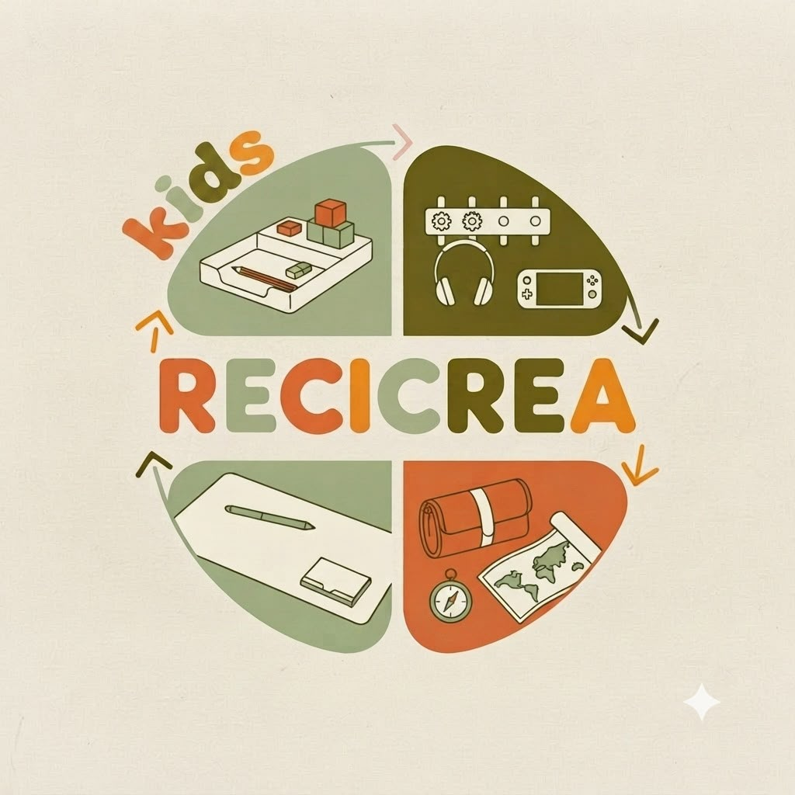

Recicrea
"Para cada lugar, el organizador que te acompaña"
Transformamos espacios con organizadores ecológicos diseñados especialmente para los más pequeños.
Conoce más

Recicrea"Para cada lugar, el organizador que te acompaña"
Transformamos espacios con organizadores ecológicos diseñados especialmente para los más pequeños.
Conoce más
Este producto es un organizador de escritorio infantil de carácter ecológico, modular y didáctico, diseñado meticulosamente para satisfacer las necesidades de orden de los niños en sus áreas de estudio, mientras se mantiene un respeto absoluto por el entorno. La estructura base está fabricada de manera artesanal y minuciosa, recolectando y seleccionando materiales 100% reutilizados de alta resistencia, tales como tubos de cartón rígido de diferentes diámetros, cajas de empaques comerciales reforzadas y contenedores plásticos o de madera recuperados.
El propósito fundamental de este proyecto es generar un impacto positivo en la mentalidad infantil, fomentando simultáneamente el hábito del orden y una sólida conciencia ecológica desde las etapas más tempranas del desarrollo. A través de este organizador, buscamos introducir a los niños en el concepto de la economía circular de una manera sumamente práctica y comprensible: enseñándoles que los recursos son valiosos y que el desecho de hoy puede ser la materia prima de una gran creación mañana.
Inspirar y apoyar el aprendizaje de la niñez hondureña a través de la creación de organizadores ecológicos e innovadores. Transformamos materiales reciclados en herramientas educativas seguras, funcionales y de alta calidad, promoviendo desde la infancia una cultura de respeto y cuidado por el medio ambiente.
Ser la microempresa líder en Honduras en el diseño de organizadores infantiles sostenibles, reconocida por transformar el concepto de espacios de estudio y juego. Nos proyectamos como un referente de innovación verde que demuestra que el desarrollo académico de los niños puede caminar de la mano con la preservación del planeta.
La filosofía de este proyecto nace de la firme convicción de que la educación ambiental no debe ser un concepto teórico o lejano para los niños, sino una práctica diaria, tangible y divertida que empiece en su propio entorno. Nos basamos en la misión de concientizar a las nuevas generaciones sobre el cuidado del medio ambiente por medio del reciclaje activo, demostrándoles con hechos que al darle una segunda oportunidad a las cosas desechables podemos formar algo muchísimo mejor, útil y valioso.
Jardín de Niños Experimental, dentro de Ciudad Universitaria, Tegucigalpa.
Instagram: @Recicrea